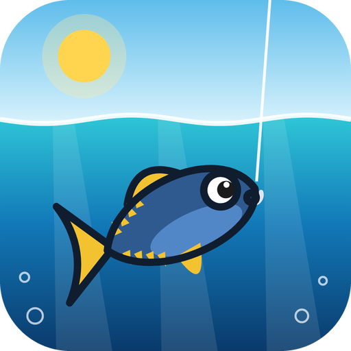
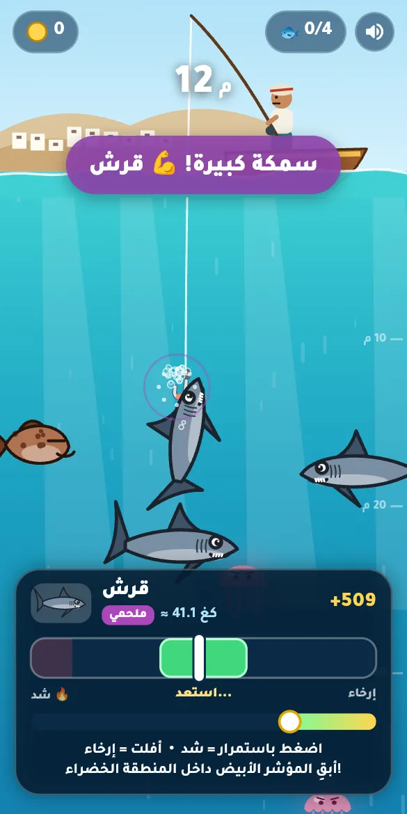
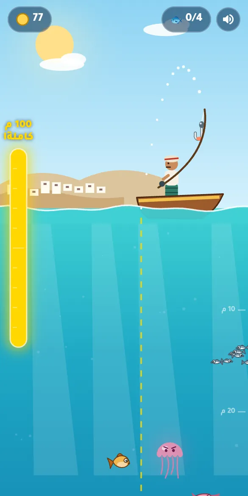
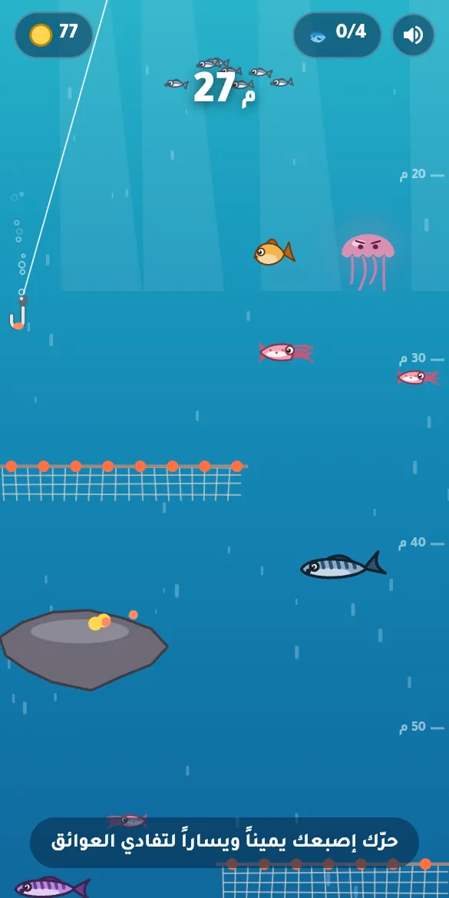
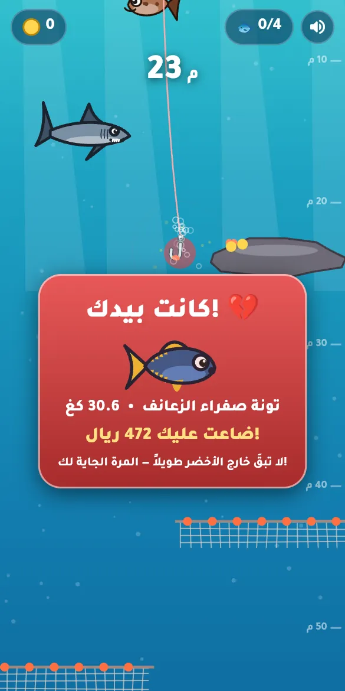
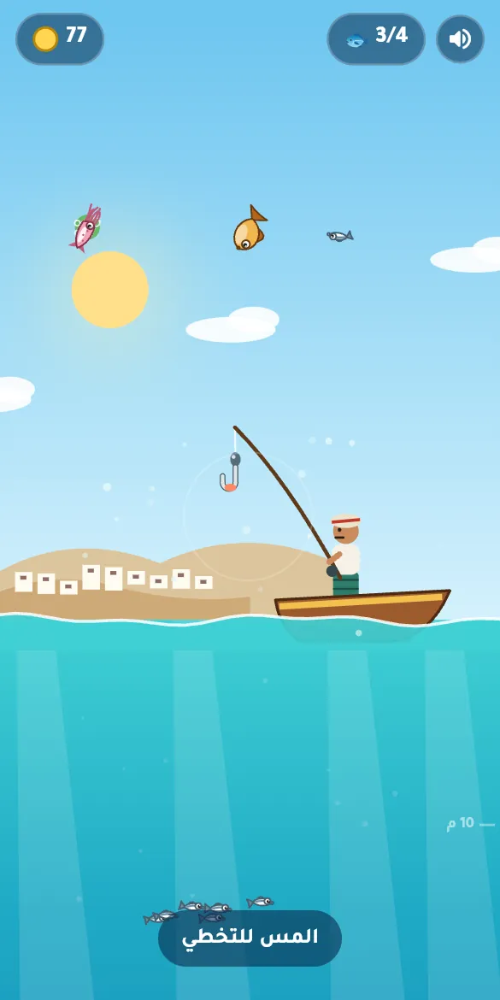
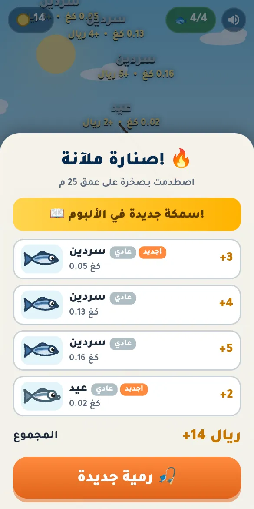

صياد البحر العربي
من ساحل المكلا إلى الأعماق
ارمِ صنارتك، تفادَ قناديل البحر والشباك القديمة، والتقط أسماكك وأنت صاعد… وإذا علق قرش، فاستعد للصراع!
13 نوعاً من الأسماكصراع الأسماك الكبيرةبالعربية بالكاملبدون إنترنتمجانية
⬇ تحميل لأندرويد
▶ العب الآن من المتصفح






كيف تلعب؟
🎣
ارمِاسحب إصبعك للخلف وأفلت — كلما زاد السحب نزلت الصنارة أعمق
انزل وتفادَحرّك إصبعك يميناً ويساراً، ولمس أي عائق يبدأ الصعود فوراً🐟
اصطد وأنت صاعدمرّ بالصنارة على الأسماك حتى تمتلئ🦈
صارعاضغط للشد وأفلت للإرخاء، وأبقِ المؤشر في المنطقة الخضراءماذا في اللعبة؟
- 🌊 ألوان الماء تتغيّر مع العمق حتى الظلام
- 💪 صراع حقيقي مع القرش والتونة والهامور
- 💔 «كانت بيدك!» — ترى السمكة التي ضاعت
- 🎉 الأسماك تطير فوق القارب عند الوصول
- 📖 إعلان عند كل سمكة جديدة في ألبومك
- 🪙 كل سمكة بوزنها وقيمتها بالريال
- 📳 اهتزاز يتصاعد أثناء الصراع
- 🔊 أصوات الموج والبكرة وانقطاع الخيط
أسماك البحر العربي
سردينعيدثمدسرطانحبارشروة
كنعدسمك الطياردراك
هامورتونة صفراء الزعانفقرش
قرش الحوت ✨
قريباً: الحراج والترقيات والألبوم الكامل، ثم مناطق جديدة: خليج عدن وسقطرى وباب المندب وأعماق المحيط الهندي.
طريقة التثبيت
- اضغط «تحميل لأندرويد» وانتظر حتى ينتهي التحميل.
- افتح الملف sea-hunter.apk من الإشعارات أو من مجلد التنزيلات.
- إذا ظهرت رسالة «لا يُسمح بالتثبيت من هذا المصدر»، اضغط الإعدادات وفعّل السماح من هذا المصدر، ثم ارجع واضغط تثبيت.
- إذا ظهر تنبيه من Play Protect، اختر التثبيت على أي حال.
اللعبة تعمل بالكامل بدون إنترنت ولا تطلب إذن الوصول إليه، ولا تجمع أي بيانات، وتقدّمك محفوظ على جهازك فقط. نسخة المتصفح تحتاج إلى الإنترنت لفتحها أول مرة.
التحقق من الملف
بصمة SHA-256 للملف الرسمي:
eccb59667b3c688a553f83cd4dfc9e9959f8d19e612d9ccf0c5880b398c88aa4